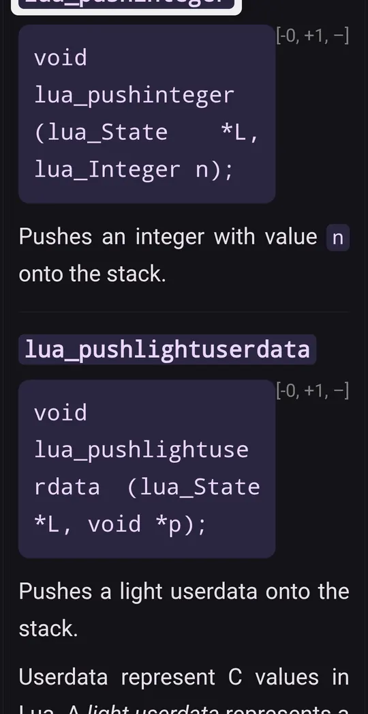

JavaScript documentation, offline on Android
The JavaScript language reference, built from MDN Web Docs: every built-in object, method and keyword, plus the guides. Download it once and look up Array.prototype.flatMap or Promise.all with no signal.
What is in the JavaScript docset
The JavaScript docset is generated from MDN Web Docs, the reference most web developers already use. Built-in objects (Array, Map, Promise, Intl…) are listed with their full prototype paths, statements and keywords have their own entries, and the guides are included too.
It is a big download, about 327 MB compressed, because the pages carry MDN's examples and related web material. Use Wi-Fi: DevDocs has a "Download over Wi-Fi only" setting, and downloads resume if the connection drops.
- Version
- Current feed build
- Entries
- 9,447
- Download
- 327 MB
- Source
- Official docset feed (from MDN Web Docs)
Entry types: Property 3,641 · Method 3,094 · Class 1,125 · Guide 694 · Event 461 · Constructor 313 · Keyword 107. Figures from the docset's own index, checked on 27 October 2026; versions change as the feeds update. Download size is the compressed archive.

Example entries you can search offline
A few real entries from the JavaScript docset's index, as they appear in search results:
| Entry | Type |
|---|---|
| Array.prototype.flatMap | Method |
| Array.prototype.reduce | Method |
| Promise.all | Method |
| Object.entries | Method |
| String.prototype.replaceAll | Method |
| Intl.DateTimeFormat | Method |
| JSON.parse | Method |
| Map | Class |
| Window.structuredClone() | Method |
| async function | Keyword |
How to get the JavaScript documentation offline
- Install DevDocs from Google Play. It is free and needs no account.
- Open the Store tab and search for JavaScript.
- Tap Download. The docset downloads in the background (327 MB compressed) and is indexed on your phone.
- Open Search or the docset in your Library. From now on it works with no connection.
Tips for searching the JavaScript docs
- Type the prototype path for instance methods, for example
Array.prototype.at; static methods are justObject.groupBystyle. - Keywords such as
async function,letorclassare entries of type Keyword. - Pair it with the TypeScript, NodeJS and HTML/CSS docsets so one search covers the whole front-end stack.
Related docsets
Also in the DevDocs Store: TypeScript, NodeJS, HTML, CSS, HTTP, jQuery. Install any of them and one search covers them all. See also: React documentation offline.
JavaScript docs offline: questions
Where does the JavaScript docset come from?
Why is the download so large?
Is Node.js included?
More answers in the DevDocs FAQ.
Other documentation you can keep offline
- Python 16,146 entries
- Kotlin 12,301 entries
- Java 59,956 entries
- Android (Kotlin) 200,572 entries
- React 1,369 entries
- Django 5,705 entries
Or browse all 806 docsets by category.
Get the JavaScript docs on your phone
DevDocs is free, has no ads and needs no account.